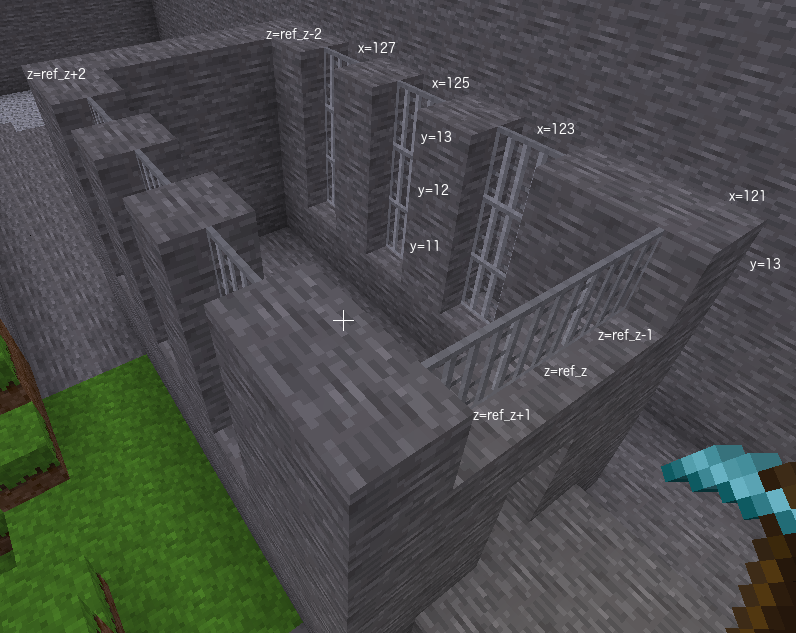

Let us place some iron bar type windows on the front wall and side walls of the castle.
Place three windows on each side wall. The windows will be 3 blocks high and one block wide and evenly spaced along the side wall. They will not touch the floor but can go to the full height of the castle base.
Place one window along the front wall. It will be three blocks wide and one block high. It will be placed on the top row of blocks of the castle base.
We will use bars for our windows "xpanes:bar_flat". The problem with bars is we have to specify a direction as well as a the building material name.
Python has a dict type which means dictionary. A dict contains multiple pieces of data in a single variable. We have also seen lists store multiple pieces of data.
my_list = [13, 14, 15]
The difference with dicts is they can give names to each piece of data in the variable. The names are called keys and you use the key to specify which piece of data you want.
my_dict = {"name":"xpanes:bar_flat", "direction":"+x"}
The example above has two pieces of data, "xpanes:bar_flat" is a str and is the first piece of data. It has a key "name". The second piece of data is "+x" which is also a str. It has a key "direction".
For "xpanes:bar_flat" there are two possible directions and they are the directions in which a player would be looking to look through the window. The "+x" direction means player would be looking in direction of the x axis. If no direction is specified then "+x" is used by default. The "+z" direction means player would be looking in the direction of the z axis.